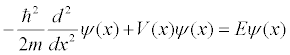

The Shooting Method model solves the time independent Schrödinger equation with potential energy V(x) when the energy E is changed.

Not all solutions this differential equation are valid. We seek solutions y(x) that are zero outside of a finite spatial region [xmin, xmax] and we require that the solution be zero at the boundaries in order to avoid a discontinuous jump in y(x). A solution to the time independent Schrödinger equation that satisfies these conditions is known as an energy eigenfunction.
Adjust the energy E to find the energy eigenfunctions for various potential energies. The differential equation is solved starting at the left boundary when the slider is moved. (Plank's constant h and mass m are one.) The error in y(x) at the right boundary is shown as a red line. The computation is automatically terminated if the solution becomes larger than 109 because a valid eigenfunction must be finite and normalizable.
Gould, Tobochnik, and Christian An Introduction to Computer Simulation Methods 3ed page 677.
This simulation was created using the Easy Java Simulations (Ejs) modeling tool. You can modify this simulation if you have Ejs installed by right-clicking within a plot and selecting "Open Ejs Model" from the pop-up menu item. Information about Ejs is available at: < http://www.um.es/fem/Ejs/ >